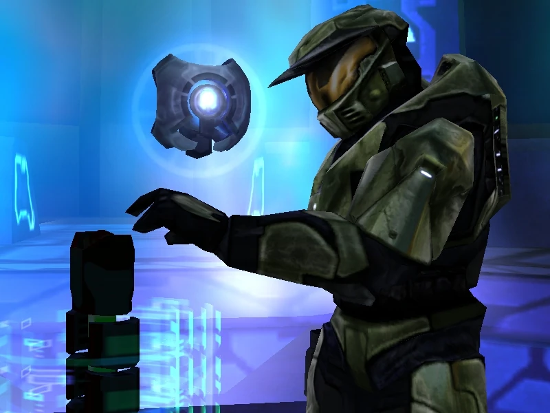
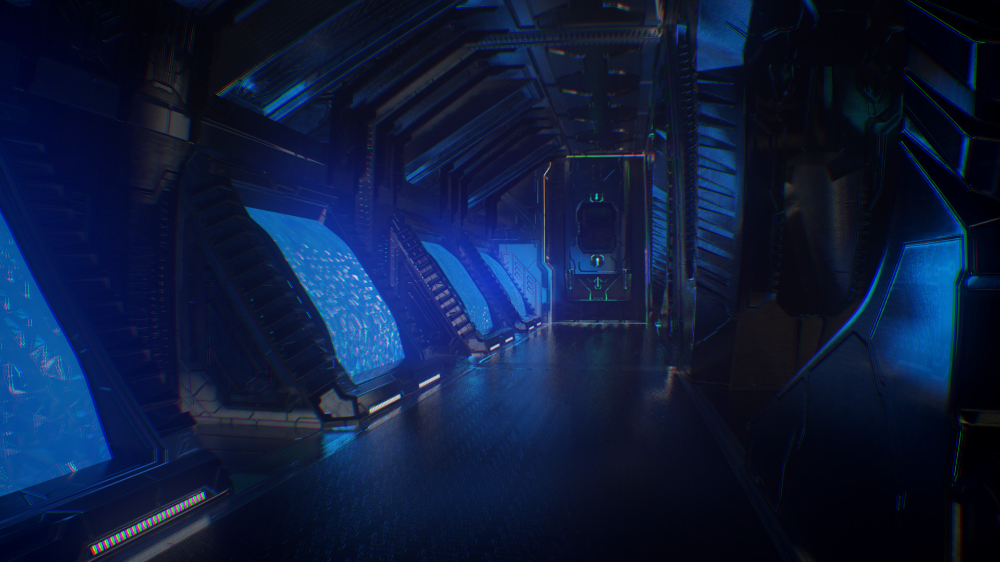

Mergi la inceput
Mergi inapoi
The Library
Considerată una dintre cele mai dificile misiuni din joc, The Library este un
labirint subteran plin de Flood care atacă în valuri continue.Master Chief luptă
din greu, alături de 343 Guilty Spark, pentru a ajunge la un artefact numit Index,
necesar pentru a activa sistemele Halo. Atmosfera este tensionată, iar inamicii sunt
numeroși, punând accent pe rezistență și gestionarea muniției.


Urmatorul nivel.